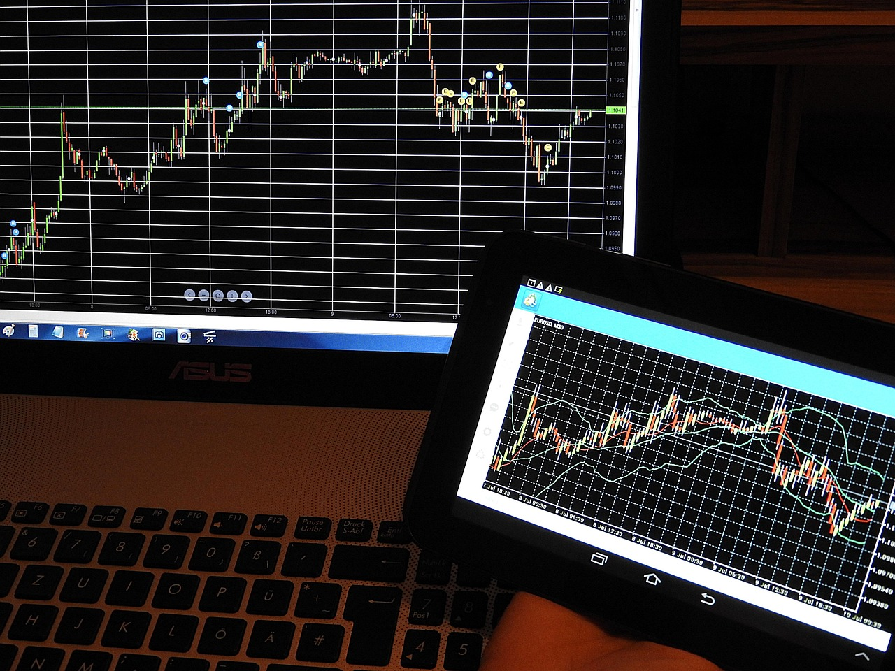

マネックス証券 FX PLUS紹介ページ
1. FX PLUSを簡単にご説明
マネックス証券の「FX PLUS」は、初心者から上級者まで幅広い投資家に対応した外国為替証拠金取引（FX）サービスです。取引手数料無料で、全通貨ペアにおいて1,000通貨単位から取引が可能です。取引ツールには高機能な「MonexTraderFX」や、スマートフォン向け「MonexTraderFX スマートフォン」などが提供されており、外出先でも取引が可能です。
2. 利点、サービス
- 取引手数料無料
- FX PLUSでは、取引手数料が無料で、コストを抑えた取引が可能です。
- 業界最狭水準のスプレッド
- 主要通貨ペアにおいて、業界最狭水準のスプレッドが提供されています。
- 高機能な取引ツール
- 「MonexTraderFX」や「MonexTraderFX スマートフォン」など、豊富なテクニカル指標やチャート機能を備えた取引ツールが利用可能です。
- 100％信託保全
- 顧客から預かった証拠金は信託銀行で厳格に管理されています。
3. 料金紹介
| 項目 | 内容 |
|---|---|
| 口座開設・維持費 | 無料 |
| 取引手数料 | 無料 |
| 最小取引単位 | 1,000通貨 |
| スプレッド（例：USD/JPY） | 0.2銭（原則固定・例外あり） |
| レバレッジ | 最大25倍 |
| 証拠金預入通貨 | 円、米ドル、ユーロ |

結論
マネックス証券の「FX PLUS」は、取引手数料無料や業界最狭水準のスプレッド、高機能な取引ツールなど、コストと利便性を兼ね備えたFX取引サービスです。100％信託保全により、安全性も確保されており、これからFX取引を始めたい方や、コストを抑えて取引を行いたい方に最適な選択肢です。
ご利用にあたっての注意事項
本記事は情報提供を目的としており、投資の勧誘を目的としたものではありません。FX（外国為替証拠金取引）は、元本保証のないリスクの高い金融商品です。相場変動等により損失が生じる場合があり、預け入れた証拠金を上回る損失が発生する可能性もあります。
取引を開始する際は、契約締結前交付書面や商品説明書を十分にご確認の上、ご自身の判断と責任においてお取引ください。